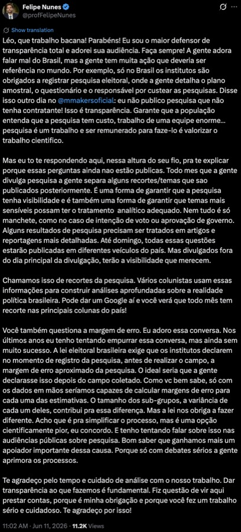
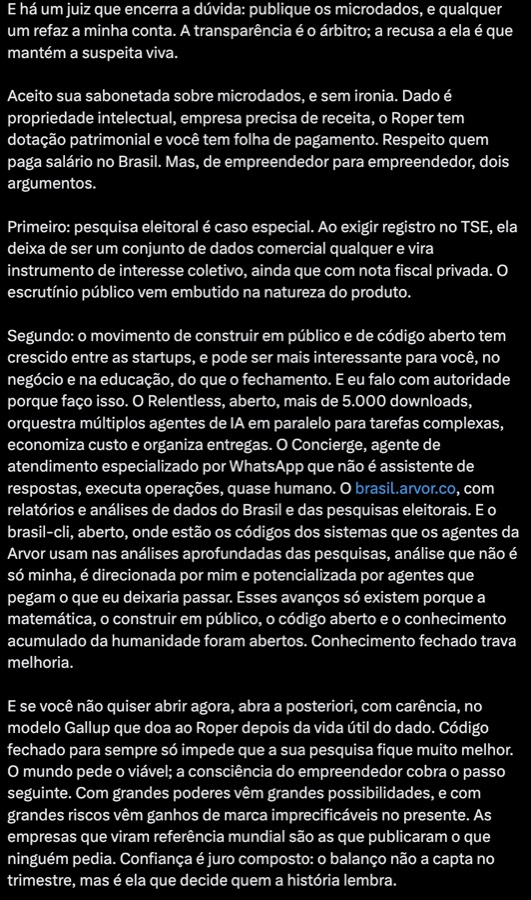
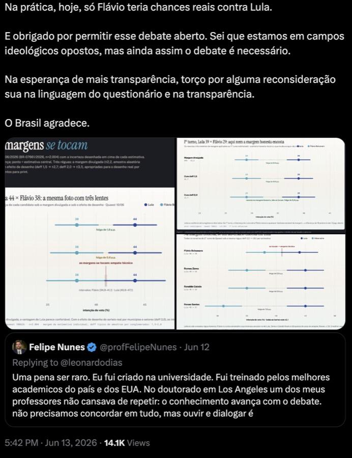
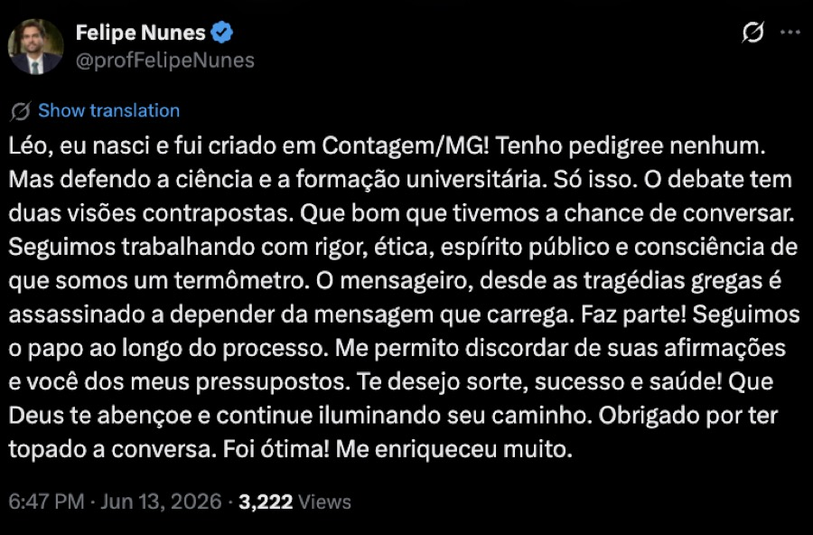

45×37
Flávio não está inviável
Ele perde para Lula no 2º turno, mas supera Caiado, Zema e Renan entre os testados. A “inviabilidade” não cabe nos próprios números da Quaest.
O Flávio que falta não foi para Lula: parou fora da urna. A pesquisa não prova a “inviabilidade” de Flávio Bolsonaro: ele segue sendo o adversário de direita mais competitivo contra Lula. O que ela prova é mais incômodo para uma casa que vende confiança: o questionário de julho foi registrado com a capa de junho, assinado em 9 de julho, faturado em 3 de julho antes do campo, e chegou ao público com 31 resíduos de template, coleta declarada de CPF e Instagram e 36 dos 101 itens sem resultado. O suplemento de 16/07 acendeu 8 deles, e reescreveu o texto de duas perguntas em relação ao instrumento registrado. Restam 28 sem topline. A falha grave está na cadeia de transparência — não em inventar fraude onde os arquivos não a demonstram.
A entrevista domiciliar em 120 municípios, o sorteio por conglomerados e o controle por áudio e geolocalização são ativos reais. Sexo e idade batem quase ao decimal com o TSE. Essa competência torna os defeitos de transparência menos desculpáveis, não mais.
Ele perde para Lula no 2º turno, mas supera Caiado, Zema e Renan entre os testados. A “inviabilidade” não cabe nos próprios números da Quaest.
Arquivo “JUL26” no metadado; capa “JUNHO/2026” e projeto OP093/25; assinatura ICP-Brasil em 9 de julho. A versão oficial não se identifica.
O deck de 15/07 publica 65 de 101 itens. O suplemento de 16/07 acende 8 do bloco de tarifas, num segundo ciclo de manchete, e reescreve o texto de duas perguntas em relação ao instrumento registrado. Restam 28 sem topline; o bloco Michelle/Paulo Figueiredo segue inteiro fora.
A margem publicada é aproximação de amostra aleatória simples. Sem deff, pesos finais nem margem da diferença, o placar parece mais decidido do que a conta permite.
Há evidência direta de falha de versão, instrumento registrado incompleto, publicação seletiva e incerteza subdocumentada. Não há, nos arquivos disponíveis, prova de fabricação de entrevistas, fraude de resultado ou manipulação encomendada pelo Banco Genial. Incentivo econômico é hipótese de risco; acusação exige ponte causal — e essa ponte não está publicada.
Este laudo complementa, sem apagar, a auditoria da rodada de 10/06/2026. Ao longo do texto, Fato é observação documental ou cálculo reproduzível; Inferência é a explicação mais compatível com os fatos; Hipótese exige evidência adicional.
Um questionário eleitoral é peça de prova: projeto, mês, versão, randomizações e assinatura precisam formar uma cadeia inequívoca. Aqui os carimbos de tempo brigam entre si. Isso não autoriza dizer que o aplicativo de campo estava errado; autoriza dizer que o público recebeu um artefato inadequado para auditar o que foi aplicado.
A NFS-e da rodada de julho é emitida em 3 de julho, seis dias antes do registro no TSE e uma semana antes das entrevistas. Faturar no início da competência é prática comum de serviço; o fato apenas fixa a linha do tempo.
Quaest_NFe_072026.pdf · “mês de julho/26 · parcela (1/1)”O questionário é assinado por certificado ICP-Brasil da estatística responsável às 13:41:57; a Declaração do Estatístico, às 14:05:58. Documento assinado em julho, ostentando capa “JUNHO/2026”. O carimbo de tempo é a evidência objetiva ao lado da capa errada.
Quaest_Questionario_072026.pdf · CPF da responsável redigido nesta peçaA rodada de julho recebe o número BR-07181/2026. A de junho carregava BR-07661/2026 — a pesquisa anterior tem o número maior. A numeração do PesqEle não é sequencial por data; a inversão é registrada aqui só para antecipar a pergunta óbvia, não como anomalia.
A coleta presencial acontece de 10 a 13 de julho, em 334 setores censitários de 120 municípios, com exatamente seis entrevistas por setor.
O relatório de 121 páginas é gerado no dia 15. A capa do deck diz “BRASIL · JULHO DE 2026”; a do questionário, “PESQUISA GENIAL NACIONAL · JUNHO/2026”. Duas capas, duas datas, um mesmo objeto de registro.
Quando a capa aponta para outro mês, desaparece a garantia documental de que relatório, PesqEle e instrumento são o mesmo objeto. O relatório afirma conformidade com o questionário registrado; a afirmação é formalmente frágil porque o próprio arquivo não controla sua versão.
“Questionário completo aplicado ou a ser aplicado.”
Lei nº 9.504/1997, art. 33, VI

Colapsando os espaços em branco introduzidos pela extração do PDF, o documento traz 28 ocorrências de “TRAZER ITEM AQUI” e 3 de “TRAZER OPÇÃO AQUI”, além de um “SM, JÁ SABIA” onde se lê o correto em outros seis pontos. Em software CAPI, substituições automáticas são normais; no registro legal, o público precisa ver a versão exata ou a tabela completa de substituição — não adivinhar o que a tela mostrou.
Correção metodológica desta rodada: a contagem contígua sobre o texto do pypdf devolvia 26 (24 + 2) porque o token “AQUI” quebrava de linha em cinco casos. A contagem semântica correta é 31 (28 + 3). O gerador foi corrigido para colapsar espaços antes de contar.
A abertura promete que as respostas “não são associadas ao seu nome”. O encerramento de julho pede, oralmente, nome, telefone, e-mail, CPF e a arroba do Instagram — com CPF adicionado justamente em julho (junho pedia só os três primeiros). Pode haver separação técnica no sistema, mas o PDF não explica finalidade, base legal, retenção nem dissociação. É problema de consentimento e auditabilidade, não sentença automática de ilegalidade.
O suplemento de tarifas de 16/07 acendeu oito perguntas antes retidas (perícia no cap. 11). Mas o texto exibido nos slides não é o texto do instrumento em registro sob BR-07181/2026. Em dois itens a versão pública é direcionalmente mais dura que a registrada, e um questionário é peça de prova: o que se aplica e o que se publica têm de ser o mesmo enunciado. Fato · custódia
| Item | No instrumento registrado (TSE) | No slide publicado (16/07) |
|---|---|---|
| Q60 | “o governo Lula afirma que Flávio apoiou o tarifaço” | “Lula acusa Flávio de ter pedido o tarifaço” |
| Q65 | “fazem você ter mais vontade de votar em Lula, Flávio ou outro” | título “o tarifaço aumenta vontade de votar em quem?”; rodapé “sua intenção de voto hoje se aproxima mais de” |
“Afirma/apoiou” vira “acusa/pediu”: verbo mais forte, Lula posto como acusador ativo, Flávio como réu que nega. Em Q65, um empurrão auto-relatado é reescrito como intenção de voto sob manchete causal. A existência da divergência é Fato textual; a intenção por trás dela não é afirmada. Contas em quaest_0726_suplemento.json.
Na página 4, sob o cabeçalho visível BR-07181/2026 (julho), a camada de texto extraível carrega BR-07661/2026 — o registro de junho. É o mesmo tipo de resíduo da capa errada do deck principal: template reaproveitado entre rodadas, agora rastreável no arquivo. O título interno do PDF, “Capas_Tematicos” no plural e “Novo”, sugere um molde de série. A capa visível, ao contrário do deck principal, está corretamente datada “JULHO 2026”. Inferência · release fatiado por tema
As duas proposições são verdadeiras ao mesmo tempo. A narrativa de “inviabilidade” não cabe nos dados da Quaest; a de empate automático também não. Em julho, Flávio perde 45×37 para Lula, mas supera todos os demais adversários testados.

O dado correto é “opositor mais competitivo, hoje atrás”. A Quaest não consegue usar os próprios números para provar que Flávio é substituível por Caiado ou Zema.
Aprovação de Lula vai de 47/48 para 48/47; avaliação positiva sobe de 34 para 36 e negativa cai de 38 para 36. Parte do movimento se explica sem teoria conspiratória.
Lula: potencial 45→47 e rejeição 53→50. Flávio: potencial 39→38 e rejeição 56→57. Direção coerente com o voto, mas mudanças pequenas.
“Família Bolsonaro” passa de 44 para 46; “mais um mandato de Lula”, de 40 para 38. O frame assimétrico permanece e não nasceu em julho.
Entre o 1º e o 2º turno, cerca de 20 pontos são liberados: 13 dos candidatos de direita eliminados e 7 de indecisos que decidem. Os totais de cada barra e os saldos líquidos são Fato. Quem migra para quem — a matriz de transição — a Quaest não publica. Todo fluxo abaixo é inferência, e está hachurado como tal.
1º turno: Lula 40 · Flávio 28 · Outros (Caiado/Zema/Renan) 13 · Indecisos 11 · Branco/Nulo 8. 2º turno: Lula 45 (+5) · Flávio 37 (+9) · Branco/Nulo 14 (+6) · Indecisos 4 (−7). A repartição de cada fluxo é inferência: a matriz de transição não foi publicada.
| Fluxo inferido (origem → destino) | Modelo | Mín. | Máx. |
|---|---|---|---|
| Outros (Caiado·Zema·Renan) → Flávio | 8 | 0 | 9 |
| Outros → Branco/Nulo | 4 | 0 | 6 |
| Outros → Lula | 1 | 0 | 5 |
| Indecisos → Lula | 4 | 0 | 5 |
| Indecisos → Branco/Nulo | 2 | 0 | 6 |
| Indecisos → Flávio | 1 | 0 | 9 |
Mínimo e máximo são os extremos compatíveis com os toplines publicados (conservação de massa, retenção máxima nas demais células). Qualquer combinação dentro desses limites reproduz os mesmos números públicos — por isso nenhum elo pode ser afirmado como medido.
Os indecisos caindo de 11% para 4% entre turnos não é dado sumindo: é comportamento esperado quando a cédula passa de nove nomes para uma escolha binária. A prova está ao lado — o Branco/Nulo sobe de 8 para 14, parte do eleitorado recusando os dois finalistas em vez de escolher. A estrutura repete junho (44×38 → 45×37): nenhum pico mês a mês suspeito, nada da patologia “Lula retém tudo e Flávio vaza”. Ao contrário, Flávio ganha mais na transferência (+9 vs +5), aritmeticamente esperado por ter mais afins eliminados na cédula.
No recorte por posicionamento ideológico (deck, pág. 38), o voto de Flávio no segmento direita não-bolsonarista cai na série: 84 → 90 → 88 → 82 → 74 (março a julho). A queda de julho isolada (82→74, 8 p.p.) fica em 1,9–2,7σ — zona cinzenta. A queda acumulada desde abril (90→74, 16 p.p.) chega a 3,8–5,3σ — dificilmente ruído amostral puro, mesmo com deff 2.
Mas há dois confundidores documentados. (1) Rotação territorial: 333 dos 334 setores mudam entre junho e julho — cada onda é amostra quase disjunta, o que infla a variância entre ondas. (2) Composição do segmento: o rótulo é autodeclarado a cada onda, não é painel; a crise Michelle×Flávio pode re-rotular bolsonaristas desiludidos como “direita não-bolsonarista”, diluindo o voto sem migração real. E o destino do voto que sai é sobretudo “não vai votar” (9→15), não Lula (6→8).
Base do subgrupo: não publicada. Sem o n não ponderado do recorte — exigência de transparência WAPOR/ABEP —, nem a Quaest nem o leitor separam migração real de artefato de composição. Isso é o achado de auditoria; o resto é incerteza honesta.
Mar 84 · Abr 90 · Mai 88 · Jun 82 · Jul 74. Queda acumulada 90→74 = 3,8–5,3σ, mas com rotação de 99,7% dos setores e recomposição do segmento autodeclarado.
Fato Os totais fecham na conservação de massa; a estrutura é estável frente a junho. Nenhum sinal de manipulação nos números.
Inferência A opacidade — matriz de transição e base de subgrupo não publicadas — favorece a narrativa de “consolidação” que os dados só sustentam em parte: a direita não-bolsonarista vaza para Lula e, mais ainda, para o branco/nulo.
Hipótese A queda acumulada da série é anomalia digna de registro, não prova de manipulação: carrega dois confundidores documentados e um mecanismo plausível (crise familiar, com o voto indo para a abstenção). Anomalia registrável, não fraude demonstrada.
A margem divulgada é individual e aproximada por amostra aleatória simples. Para dizer se A está à frente de B interessa a variância da diferença — com covariância, conglomerados e pesos. Sem os microdados, só cabem cenários, claramente rotulados.
deff 1: 4,05 a 11,95 · deff 1,5: 3,16 a 12,84 · deff 2: 2,42 a 13,58 p.p.
Resultado: nos três cenários, o intervalo aproximado não inclui zero — a vantagem de Lula é mais robusta em julho do que em junho. Ainda assim, publicar o deff real é obrigação científica básica, porque recortes e outras perguntas podem mudar de conclusão.
Contra 157.846.602 eleitores residentes, sexo e idade são quase cópias. A maior diferença territorial é o Sudeste, −1,02 p.p. Já a régua de renda familiar sub-representa a base até 2 salários mínimos em 4,44 p.p. — o mesmo alvo de junho.
| Sexo · Quaest × TSE | |||
|---|---|---|---|
| Grupo | Quaest | TSE | Δ p.p. |
| Mulher | 53% | 52,82% | +0,18 |
| Homem | 47% | 47,18% | −0,18 |
| Idade · Quaest × TSE | |||
|---|---|---|---|
| Grupo | Quaest | TSE | Δ p.p. |
| 16-34 | 32% | 31,57% | +0,43 |
| 35-59 | 45% | 45,16% | −0,16 |
| 60+ | 23% | 23,27% | −0,27 |
Sudeste −1,02 · Nordeste −0,58 · Sul +0,52 · Norte +0,69 · Centro-Oeste +0,40 p.p.
Até 2 SM: 35,44% (PNAD) vs 31% (Quaest), −4,44 p.p. · 2–5 SM +2,77 · 5+ SM +1,67
Descompasso de edição declarado com transparência: esta auditoria usa a PNAD Contínua anual, 1ª visita, 2024, por disponibilidade de microdados com 200 pesos replicados. A ficha técnica da Quaest (relatório, p. 3) declara calibrar por “TSE 2026, PNAD 2026/1, PNAD 2025/1, CENSO 2022” — edições mais recentes. A distribuição de renda em SM pode ter deslocado entre 2024 e 2025/26, então o −4,44 p.p. não é rigorosamente apples-to-apples com a referência que a Quaest diz usar. Sinalizamos o delta como sensível ao ano-base; sem os microdados da Quaest, não há como reponderar o voto.
Duas contas cirúrgicas sobre julho. A Quaest crava a maior rejeição de Flávio do mercado (57%) porque o instrumento não oferece opção neutra. E a amostra pende para a classe média — mas reponderar ao perfil de renda do país quase não mexe no placar.
A Quaest não pergunta “não votaria de jeito nenhum”. Pergunta, nome a nome, um ternário sem meio-termo: conhece e votaria / não conhece / conhece e não votaria. Sem opção neutra, toda recusa mole de quem conhece o nome vira “rejeição”. Fato
Quaest: “conhece e não votaria” (ternário, presencial domiciliar). Datafolha/Futura/Nexus: “não votaria de jeito nenhum”. AtlasIntel mede “medo” e fica fora da comparação. Fontes: deck Quaest p46; Gazeta do Povo; Tribuna de Minas; Tribuna de Jundiaí.
Rejeição de Flávio 56→57 (dentro da margem); a de Lula, 53→50. Quem se moveu foi Lula, não Flávio. A distância que aparece em julho não nasce de Flávio piorar.
Pela rejeição Quaest (57), o teto de Flávio é 43. Pela rejeição dura do Datafolha (48), seria 52. O formato ternário tira nove pontos do espaço dele.
Voto 2T + rejeição: Flávio 37+57=94, Lula 45+50=95. Compatível — ambos operam colados ao teto que o instrumento desenha.
HipóteseComo o não-voto de Flávio é mais reversível — o Datafolha registra que ele converte indecisos e transfere ~2:1 —, a Quaest superestima o teto de rejeição efetivo dele mais do que o de Lula. O “57%” subestima o espaço real de crescimento de Flávio.
A Quaest sub-representa a base (≤2 SM) em −4,44 p.p. e infla as faixas do meio. Reponderando cada tabela publicada ao alvo PNAD (35,4 / 39,2 / 25,3), a margem Lula−Flávio anda menos de 1 ponto. Fato
| Cenário | Publicado* | Reponderado | Δ |
|---|---|---|---|
| 1º turno — margem Lula−Flávio | +13,5 | +14,3 | +0,80 |
| 2º turno Lula×Flávio — proxy | +9,8 | +10,7 | +0,96 |
| Aprovação Lula — saldo | +0,9 | +2,2 | +1,28 |
| Sensibilidade · meta faixa baixa | Δ margem 1T | Δ saldo aprov. |
|---|---|---|
| Central (35,44%) | +0,80 | +1,29 |
| Baixa +1 p.p. (36,44%) | +0,99 | +1,59 |
| Baixa −1 p.p. (34,44%) | +0,62 | +0,99 |
*Publicado reconstruído a partir das faixas de renda do deck (1º turno p30; aprovação p15), que reproduz o topline (aprovação 48/47; 1º turno Lula ~41). Δ positivo = pró-Lula. O 2º turno por renda não é publicado: cenário proxy multiplicativo, nível hipótese. Hipótese
Reponderar a amostra (31/42/27) ao país (35/39/25) move a disputa Lula×Flávio menos de um ponto em todo cenário de voto — dentro do orçamento de erro (arredondamento ±0,5 + resíduo ~0,9).
O gradiente de renda mais íngreme (58 na base → 41 no topo) faz do saldo de aprovação o único indicador com efeito perto de um ponto cheio.
Sub-representar o pobre subestima Lula; reponderar ao país amplia a vantagem dele — de leve. Quem quiser explicar o placar terá de procurar fora da renda.
A renda não explica o placar. Reponderar a amostra ao perfil do país move a disputa Lula×Flávio menos de 1 ponto em todo cenário — dentro do ruído do método, e no sentido pró-Lula. Publicamos assim porque o resultado valeria nos dois sentidos: aqui ele encolhe a hipótese da renda em vez de reforçá-la. Caveat honesto: uma dimensão só, sem microdados, sem interação com região ou idade.
Alvo PNAD: PNADC anual 1ª visita 2024, 16+ com renda domiciliar válida, deflacionada a abr/2026 (SM R$ 1.621). Contas reproduzíveis em quaest_0726_rejeicao_reponderacao.json.
Duas hipóteses de seleção amostral sobre a entrevista presencial domiciliar. Uma cai no calendário; a outra fica de pé na literatura de fadiga. Nenhuma prova viés: as duas mostram que a Quaest retém exatamente os dados que permitiriam medi-lo. A tensão de renda do capítulo anterior é insumo direto da primeira.
05/06 → 08/06
2 dias úteis · 2 de fim de semana Fato
10/07 → 13/07
2 dias úteis · 2 de fim de semana Fato
| Rodada | Registro TSE | Período de campo | Dias da semana | Úteis | Fim de semana |
|---|---|---|---|---|---|
| Maio / 2026 | n/d | datas não localizadas no acervo | n/d | n/d | n/d |
| Junho / 2026 | BR-07661/2026 | 05/06 → 08/06 | sex, sáb, dom, seg | 2 | 2 |
| Julho / 2026 | BR-07181/2026 | 10/07 → 13/07 | sex, sáb, dom, seg | 2 | 2 |
Maio/2026 fica registrada como ausência honesta: sem PDF nem registro no acervo local. Um terceiro caso elevaria o padrão a Fato robusto. Datas conferidas com calendário autoritativo (05/06 e 10/07 caem numa sexta). Fonte comparativa da rodada de junho: quaest_100626.html.
Entrevista domiciliar em dia útil perderia a PEA ocupada e sobraria não-PEA (aposentados, donas de casa), suposta mais lulista.
O calendário de fim de semana e a cota de idade derrubam a versão forte. Sobra um resíduo intra-célula não falsificável de fora. No máximo Hipótese.
101 itens, presencial, entrevista longa. Quem aguenta até o fim é sistematicamente diferente: mais interessado em política, com mais tempo, mais ideológico.
Ancorada na literatura de burden e satisficing. A ponte para voto e sua direção precisam dos dados retidos. É o vetor de seleção mais difícil de descartar.
As 28 perguntas ainda sem topline (cap. 11) concentram itens numerados altos, os mais sujeitos a satisficing e "não sei"; a fadiga poderia interagir com o efeito de casa nos itens terminais. Checagem da pirâmide etária cruzada com os benchmarks do TSE do capítulo 06.
Public Opinion Quarterly 73(2):349-360
Comprimento maior reduz quem inicia e conclui. As questões no fim recebem tempos menores, mais item-nonresponse, respostas abertas mais curtas e menos variabilidade em grades: satisficing por fadiga, medido. poq 73(2)
Applied Cognitive Psychology 5(3):213-236
Teoria do satisficing: sob carga cognitiva o respondente adota atalhos, a primeira alternativa plausível, a concordância, o "não sei", a não diferenciação. A primazia é mais forte em quem tem menor habilidade cognitiva. acp 5(3)
Public Opinion Quarterly 73(1):74-97
Quem interrompe difere sistematicamente de quem conclui, e a escolaridade associa-se ao break-off. Sabe-se pouco de quem abandona: o mesmo ponto cego que a não publicação de base e taxa de conclusão cria aqui. poq 73(1)
Caveat de modoBoa parte da literatura de break-off é de survey web. No presencial com entrevistador, a desistência aberta é menor por pressão social, mas a seleção não desaparece: desloca-se para o consentimento na porta e para o satisficing nas questões finais.
Inferência O achado robusto não é "provou-se viés". É que o desenho tem dois vetores plausíveis de seleção, o campo de fim de semana com filtro de porta e a fadiga de um instrumento de 101 itens, e a Quaest retém precisamente o que permitiria medi-los: taxa de resposta, recusa, duração, distribuição por dia e horário, base não ponderada por subgrupo e conclusão por posição. Opacidade, não fraude.
Datas conferidas com calendário autoritativo. Fonte comparativa da rodada de junho: quaest_100626.html. Contas e citações reproduzíveis em quaest_0726_campo.json.
Duas invisibilidades do crime organizado, testadas em separado. A primeira, se o sorteio evita favela, cai na aritmética. A segunda, a ausência do tema segurança no instrumento, é fato de omissão num país em que segurança é o problema número um e a facção já é vizinha de dezenas de milhões.
Classifiquei os 667 setores distintos das duas rodadas pelo geocódigo de 15 dígitos, cruzando com o Censo 2022 (coluna CD_TIPO=1, Favela e Comunidade Urbana). Como a ficha declara sorteio por probabilidade proporcional à população, o esperado de setores de favela é a fatia da população municipal que vive em favela, não a fração simples de setores. Fato aritmético
| Capital | Obs. | Esp. | Leitura |
|---|---|---|---|
| São Paulo | 6 | 6,6 | praticamente no alvo (15,1% em favela) |
| Salvador | 4 | 3,4 | acima do esperado (42,7%) |
| Rio de Janeiro | 4 | 5,2 | pouco abaixo (21,7%) |
| Belém | 1 | 3,4 | o déficit mais visível (57,2%; P ≤ obs = 0,056) |
| Belo Horizonte | 0 | 1,3 | zero, mas esperado baixo |
| Brasília | 0 | 0,7 | zero, mas esperado baixo |
Nacional (jun+jul agregados): 47 setores de favela observados contra 55,98 esperados. Sub-representação leve, não significativa (P(X ≤ 47) = 0,090). Não há zero absoluto nem exclusão sistemática. O déficit concentra-se em Belém, BH, Brasília e Rio; São Paulo no alvo e Salvador acima derrubam a versão forte da hipótese.
Ressalva decisivaIsto audita o sorteio publicado, não o campo. Substituições de domicílio por segurança, se ocorressem, não são observáveis sem microdados. E a ficha não declara uma linha sobre protocolo de segurança ou troca por área de risco.
Varredura dos 101 itens: zero ocorrências de segurança, violência, facção, tráfico, PCC, milícia, assalto, roubo ou homicídio. “Crime” aparece 1 vez (crimes financeiros de Vorcaro/Master); “Polícia Federal”, 2 vezes.
No mesmo instrumento sem uma linha sobre segurança, Michelle é mencionada 22 vezes e tarifa 17. A crise palaciana e a disputa externa ocupam dezenas de itens; o problema nº 1 do eleitor, nenhum.
Datafolha/FBSP (mai/26) mede 41,2% dos brasileiros de 16+ (≈68,7 mi) vendo facção ou milícia no próprio bairro, 55,9% nas capitais. Mesma domiciliar, mesmo universo 16+, mesmo n≈2.004. O tema é mensurável.
Segurança pública é o problema nº 1 do país em 2026 e superou a corrupção pela primeira vez na série BTG/Nexus, com preocupação igual entre eleitores de Lula e da direita. A omissão não é técnica.
Inferência A hipótese forte, de evitar favela no sorteio, é refutada pela aritmética: a amostra inclui favelas a ~84% da taxa esperada, déficit leve e não conclusivo.
Fato O que sobrevive é a agenda por omissão: a ausência total de segurança no instrumento é fato documental. A razão fica em Hipótese (rodada focada em corrida e economia, ou recorte conveniente ao contratante); o efeito no placar não foi calculado.
Nada disto é exclusivo da Quaest: qualquer domiciliar enfrenta acesso restrito. O diferencial auditável seria declarar substituições e protocolo de segurança, e a ficha não o faz.
Fontes: IBGE Censo 2022 (Agregados por Setores; FCU: 12.348 favelas, 16,4 mi, 8,1% da população); Datafolha/FBSP mai/2026; FBSP Anuário 2025; ficha PesqEle BR-07181/2026. Reprodução: python3 scripts/quaest-favela-audit.py → quaest_0726_favelas.json.
O anexo publicado em 16 de julho permite comparar as rodadas pelo identificador correto do IBGE, o geocódigo de 15 dígitos. Entre junho e julho a arquitetura regional fica congelada, mas 93 dos 120 municípios e 333 dos 334 setores giram. Isso pode produzir oscilação de composição local; não permite dizer em que bairro cada candidato ganhou voto, porque a Quaest não publicou resposta nem peso por setor.
| Os seis bairros que reaparecem | |||
|---|---|---|---|
| Município · bairro | Setor jun. | Setor jul. | Mesmo? |
| Araraquara · Jardim Arco Íris | 350320805000099 | 350320805000099 | sim |
| Alocação bruta por região: idêntica | |||
|---|---|---|---|
| Região | Jun. | Jul. | % jul. |
| Sudeste | 141 | 141 | 42,22% |
| Nordeste | 92 | 92 | 27,54% |
| Sul | 48 | 48 | 14,37% |
| Norte | 28 | 28 | 8,38% |
| Centro-Oeste | 25 | 25 | 7,49% |
São Paulo mantém 22 setores e 132 entrevistas; Rio, 12/72; Belo Horizonte e Brasília, 5/30 cada; Salvador, 4/24. A quantidade é estável, os pontos mudam. Das 17 capitais de cada rodada, 14 reaparecem: julho troca Campo Grande, Cuiabá e Teresina por Maceió, Goiânia e Vitória.
Mesmo São Paulo tem, sob amostra aleatória simples, margem máxima aproximada de ±8,5 p.p. para seu n=132; Rio, ±11,5; BH e Brasília, ±17,9; Salvador, ±20. Conglomerados e pesos podem ampliar isso. O anexo não transforma uma pesquisa nacional em pesquisa de bairro ou de capital.
| Capital | Set. jun. | Set. jul. | n jul. | MOE máx. |
|---|---|---|---|---|
| São Paulo | 22 | 22 | 132 | ±8,5 |
| Rio de Janeiro | 12 | 12 | 72 | ±11,5 |
| Belo Horizonte | 5 | 5 | 30 | ±17,9 |
| Brasília | 5 | 5 | 30 | ±17,9 |
| Salvador | 4 | 4 | 24 | ±20,0 |
Os 667 setores distintos das duas rodadas aparecem no serviço oficial do Panorama. Em julho, a população do setor vai de 119 a 2.662 pessoas, mediana 596. Nenhum código inexistente, duplicado dentro da rodada ou total que não feche em 2.004.
O take fixo de seis torna o efeito intraclasse material: só o componente de cluster seria 1,25 com ρ=0,05; 1,50 com ρ=0,10; 2,00 com ρ=0,20. O deff real continua impossível sem PSU, pesos e respostas.
O rodapé dos dois anexos remete ao diretório …/Agregados_por_Setores_Censitarios_preliminares/agregados_por_setores_xlsx/UF/. O IBGE afirma que a malha definitiva substitui a preliminar. Os geocódigos auditados sobreviveram no serviço atual, mas a referência técnica está desatualizada.
A rotação territorial é enorme dentro de uma mesma moldura regional e pode contribuir para a variação amostral. Mas não sabemos sua direção, pois inferir voto do perfil censitário seria falácia ecológica. A estabilidade regional elimina uma explicação simplista por troca de macrorregião; a troca de estados, municípios e setores permanece fonte plausível de ruído que só microdados e pesos destravariam.
O deck de 15/07 é extenso, mas extensão não é completude: publicou 65 de 101 itens, deixando 36 sem topline. No dia seguinte, o suplemento de tarifas acendeu 8 desses fantasmas. É a história em dois tempos que reconcilia a auditoria. Restam 28 sem topline (72,3% de cobertura), e o próprio suplemento traz achados novos de custódia e de método.
O deck da corrida (15/07) publicou 65 de 101. O suplemento de tarifas (16/07) acendeu 8 itens antes fantasmas (Q57, Q58, Q59, Q60, Q61, Q63, Q64, Q65), levando a cobertura de 64,4% para 72,3%. Dos 28 restantes, 3 são operacionais ou de perfil para os quais nenhum instituto publica topline (Q1, Q5, Q7). O número honesto de perguntas substantivas ainda retidas é ~25. Isso não enfraquece, reforça, os dois achados que sobrevivem: o único item do bloco tarifário ainda no escuro é a Q62 (patriotismo), justo o que armaria um duelo direto Flávio × Lula sobre defender o Brasil; e o corte cirúrgico no bloco Michelle/Paulo Figueiredo (Q77, Q80 a Q83) segue inteiro fora, no deck e no suplemento.
Elegibilidade, ocupação e consentimento de gravação, itens de triagem que nenhum instituto leva a topline.
Patriotismo: o único item do bloco EUA/tarifas que o suplemento ainda retém, o que armaria o duelo Flávio × Lula.
Voto, gênero e o bloco Paulo Figueiredo seguem inteiros fora, no deck e no suplemento.
Melhor resultado para o país, expectativa de vencedor e sete ações de participação.
Direção do país e duas perguntas sobre política para MEIs.
Renda versus preços e situação econômica da família.
Esquerda/centro/direita, afetos partidários e recordação de voto; publicou-se só a escala Lulista/Bolsonarista (Q91).
O suplemento Quaest_Tarifas_072026.pdf (33 pág.) publica topline para 8 itens do bloco EUA/tarifas. As páginas 23 a 31 só reapresentam composição da amostra e a escala Q91, já públicas; não mexem na conta.
O texto exibido diverge do instrumento registrado sob BR-07181/2026 (perícia de custódia no cap. 02). “Afirma/apoiou” vira “acusa/pediu”; um empurrão auto-relatado vira “intenção de voto” sob manchete causal.
O “não sei / não respondeu” é removido dos gráficos das duas perguntas de conhecimento (Q58, pág. 7; Q63, pág. 15), forçando um Sim/Não (62/38 e 43/57). Onde importaria menos ao enquadramento (Q59, Q64, Q57), o NS/NR aparece; nas de conhecimento, some.
A ficha do suplemento declara, na página 4, “complementarmente, usamos modelo de MRP para estimativas de subgrupos”. Os recortes por posicionamento político (págs. 13 e 19) usam a mesma tipografia de linha dos toplines nacionais observados, sem nenhum marcador que distinga modelado de medido, e a página 5 atribui uma “margem de erro” única (3 a 6 p.p.) por recorte, emprestando o vocabulário do erro amostral a estimativas de modelo. O leitor não tem como saber, no gráfico, onde termina a observação e começa o modelo. A pergunta “o tarifaço aumenta vontade de votar em quem?” (Q65) devolve o basal da rodada (Lula 42 contra 40 no 1º turno, Flávio 27 contra 28): uma pergunta que reproduz a intenção já medida não prova o efeito causal que o título anuncia. quaest_0726_suplemento.json

Q57 a Q65 medem imagem dos EUA, conhecimento das tarifas, dano familiar, versões de Lula e de Flávio, patriotismo, a viagem de Flávio e — na Q65 — o efeito direto no voto. Não foi suprimido: foi escalonado. Medido em 10–13/07 (antes de a tarifa ser confirmada em 15/07), ficou fora do relatório da corrida (15/07) e saiu em 16/07 como matéria própria (“51% culpam Flávio”). Uma janela de campo, dois ciclos de manchete. O suplemento publicou 8 dos 9 itens; só a Q62 (patriotismo) segue retida.
O relatório mostra conhecimento, avaliação das falas e com quem o eleitor concorda. Omite a Q80 (mudança na vontade de votar em Flávio), a Q81 (respeito às mulheres) e a Q82–83 (Paulo Figueiredo). Publica a novela; retém o efeito eleitoral e a aresta mais negativa.
Q28 compara uma dinastia difusa com um indivíduo; Q29 compara “Lula e PT” com “família Bolsonaro”. A unidade de análise muda. Randomizar a ordem das opções não cura o conteúdo assimétrico.
Intenção espontânea, potencial, 1º e 2º turnos precedem Master, tarifas e Michelle. O topline eleitoral principal não é contaminado por esses blocos posteriores.
O bloco de junho focado em Flávio sai; julho inclui Jaques Wagner, apresenta a negação e publica os quatro resultados. Mais simétrico na forma, mas o bloco Wagner traz dois corredores que blindam o governo (Q69, Q71), e o item que exporia Flávio (Q80) foi retido. Perícia no cap. 16.
Efeito de casa não é acusação de fraude; é a inclinação sistemática que toda casa de pesquisa tem. Comparamos a Quaest com o campo de julho no 2º turno Lula×Flávio. O achado decisivo: a folga de 8 pontos não nasce de um Lula inflado — nasce de um Flávio deprimido.
Quaest 45×37 · Ideia 45×40 · Nexus/BTG 47×44 · Futura/Apex 46,3×46,1. Média do campo sem Quaest: Lula 46,1, Flávio 43,4.
O Lula da Quaest (45) fica 1,1 abaixo da média do campo — em linha. O Flávio da Quaest (37) fica 6,4 abaixo da média — o menor de todos os institutos de julho. Quem quiser rotular a Quaest de “pró-Lula” erra: o Lula dela é dos mais baixos do campo.
Futura +0,2 · Nexus/BTG +3 · Ideia +5 · Quaest +8. Média do campo: +2,7.
“Online infla, presencial deprime” não fecha: os pares presenciais da Quaest — Datafolha (43) e Nexus/BTG (44) — põem Flávio 6–7 pontos acima. Mesmo comparando presencial com presencial, o Flávio 37 destoa. Modo sozinho não explica.
O +6 da Quaest em junho estava colado na mediana do campo (~+5,6). Ela lia ambos os candidatos mais baixo — assinatura de desenho presencial com mais indecisos, não inclinação direcional. A divergência de gap aparece só em julho.
O campo de julho é fino (4 pesquisas) e disperso: a Futura despenca de +5,2 para +0,2 e a Quaest sobe de +6 para +8 — 7,8 pontos de amplitude na mesma quinzena. Ninguém é claramente “certo” num campo tão espalhado.
Fato A aritmética fecha. Em julho, o Flávio da Quaest (37) é o menor de todo o campo e ~6 pontos abaixo da média, com o Lula em linha; o gap +8 é o mais largo dos quatro e ~2× a média de julho. Verificável.
Inferência Que isso configure um efeito de casa anti-Flávio sistemático — enfraquecida pelo fato de o resíduo de gap ser de uma única onda; junho não o mostrava.
Hipótese Que o Flávio baixo seja causado pelo instrumento (preâmbulo “escândalo”, bloco Vorcaro/Master lido a todos, pergunta do medo) e não por ponderação ou universo. Não se prova sem microdados, PSU e pesos finais — exatamente o que a Quaest não publicou.
Cautela de campo, delimitadaO presencial subestimou o voto conservador em 2018 e 2022 (na véspera de 2022, projeções davam ~14 p.p. a Lula; a urna deu 5,23), e a ficha de julho não declara correção. Mas se o presencial deprime o conservador, isso é efeito de modo, não da Quaest: Datafolha (43) e Nexus (44), presenciais, põem Flávio 6 a 7 pontos acima do 37 da Quaest. O histórico não isola a Quaest, e o controle de modo acima já neutraliza a versão forte do "voto envergonhado". A síntese do cap. 13 mostra para onde o Flávio que falta de fato foi. (Alegação i de Candeloro, cap. 16.)
Toda a auditoria converge nesta pergunta. A Quaest dá o mesmo Lula do campo (45, contra a média de 46,1) e um Flávio de outro planeta (37, o menor do mercado, 6 a 7 pontos abaixo dos pares presenciais). A conta mais burra possível resolve o enigma: a Quaest não tira voto de Flávio para dar a Lula. Ela estaciona o anti-Lula mole fora da cédula.
| Instituto | Modo | Campo | Lula | Flávio | Soma | Não-escolha |
|---|---|---|---|---|---|---|
| Genial/Quaest | domiciliar | 10–13 jul | 45 | 37 | 82 | 18 |
| Genial/Quaest | domiciliar | 5–8 jun | 44 | 38 | 82 | 18 |
| Futura/Apex | presencial | 7–11 jul | 46,3 | 46,1 | 92,4 | 7,6 |
| BTG/Nexus (6ª) | domiciliar | jul | 47 | 44 | 91 | 9 |
| Datafolha | fluxo | 17–19 jun | 47 | 43 | 90 | 10 |
| AtlasIntel | digital | ~1 jul | 48,8 | 42,3 | 91,1 | 8,9 |
| Meio/Ideia | telefônica | 3–6 jul | 45 | 40 | 85 | 15 |
Todos publicam sobre o voto total (branco/nulo à parte), então a não-escolha é comparável. A Quaest deixa 18 pontos fora da cédula; o campo deixa 7,6 a 10. É a única no extremo, e em junho E julho, com 333 dos 334 setores rotacionados entre as ondas. Ruído amostral não repete o mesmo desvio em amostras quase disjuntas.
A identidade contábil (excesso de não-escolha = soma dos déficits) é trivial. O substantivo é o split 85/15: Lula está no par do campo; Flávio carrega quase todo o déficit. A Quaest não transfere voto de Flávio para Lula, estaciona o anti-Lula mole no branco, nulo e não-vou-votar. Fato aritmético, e assinatura estável nas duas ondas.
O enunciado do 2º turno (Q23 a Q26, pág. 6 do questionário) é lido assim: “Num possível segundo turno, você votaria no [nome], no [nome], votaria em branco/nulo ou não iria votar?”, mais o código 88 (indeciso). Não é escolha forçada entre dois nomes com não-voto anotado só se espontâneo: é uma cédula de quatro saídas, três de não-escolha, ditas pelo entrevistador. A oferta é simétrica; o efeito é assimétrico porque Flávio tem mais não-voto persuadável (o ternário de rejeição sem neutro já mostrava excesso de +9 p.p. nele contra +4 em Lula). E a série confirma o destino: a direita não-bolsonarista que larga Flávio vai para “não vou votar” (9 para 15), não para Lula (6 para 8). Fato documental
| Hipótese do resíduo anti-Flávio | Prob. |
|---|---|
| H-A Cédula: rampa de não-escolha lida em voz alta | 48% |
| H-B Desejabilidade social do presencial domiciliar | 18% |
| H-E Amostra/território (rotação, deff alto) | 11% |
| H-D Ponderação/rake/MRP | 8% |
| H-F Polegar da casa (viés deliberado) | 7% |
| H-C Fadiga/seleção dos 101 itens | 6% |
| H-G Universo/denominador | 2% |
H-A + H-B = 66%, o mecanismo conjunto: o instrumento oferece a rampa (oferta), o face a face domiciliar cria a demanda pela saída confortável. H-A leva a maior fatia por ser o único com prova documental no questionário e o único que distingue a Quaest dos pares de mesmo modo. Renda (H-D) mexe menos de 1 p.p. e pró-Lula; fadiga (H-C) selecionaria pró-Lula, e Lula está no par, não acima; território (H-E) explica a oscilação do ponto, não o viés que se repete. Contas em quaest_0726_sintese.json.
Split-ballot no 2º turno. Braço A (atual): lê “votaria no X, no Y, em branco/nulo ou não iria votar?”. Braço B (forçado): lê só os dois nomes, não-voto anotado só se espontâneo. Predição da H-A: no braço B, Flávio sobe 5 a 6 p.p. rumo a 42–43, a não-escolha desaba de 18 para 9–10, e Lula quase não se move. Isola o instrumento de modo, amostra e ponderação. Zero microdado sensível. A Quaest retém exatamente esse dado. Veredito: prova de opacidade, não de fraude.
O braço B do split-ballot que a Quaest não roda apareceu sozinho no mercado. A PoderData/Aya divulgou em 16/07 uma rodada de campo quase simultâneo (12–15/07) com o instrumento quase oposto ao da Quaest. Não é teste limpo, mas é o experimento natural que a síntese previa.
A PoderData muda três eixos ao mesmo tempo contra a Quaest: sem entrevistador humano (retira a desejabilidade do face a face), 17 contra 101 itens (retira a fadiga do instrumento longo) e uma saída de não-escolha a menos (o teclado oferece branco/nulo e “não sabe”, mas não lê “não iria votar”, justo a saída para onde a série da Quaest mostrava a direita não-bolsonarista vazar). Trocado o instrumento, o Flávio de 37 vira 43, exatamente onde Datafolha e Nexus o põem. Seis pontos voltaram para a cédula.
Coerência do benchmark conferida: somas fecham (jun 46+43+8+3=100; jul 45+43+9+2=99, arredondamento IVR declarado), registro confere, questionário público e curto. Passa na própria checagem.
| Eixo | Genial/Quaest | PoderData/Aya |
|---|---|---|
| Modo | presencial domiciliar | telefônica IVR/URA |
| Entrevistador | sim | não |
| Itens | ~101 | 17 |
| Saídas de não-escolha lidas | 3 | 2 |
| Não-escolha | 18 | 12 |
| Flávio (2º turno) | 37 | 43 |
| Gap | +8 | +2 |
Fato Trocado o instrumento, o Flávio que falta reaparece: não-escolha 12 contra 18, Flávio 43 contra 37, gap 2 contra 8, exatamente o consenso presencial de Datafolha (43) e Nexus (44). É a assinatura que a síntese previa.
Caveat honesto É braço natural, não controlado. A PoderData também oferece branco/nulo, logo a oferta nua não explica sozinha os 18 da Quaest (a PoderData oferece e fica em 12). O que distingue a Quaest é o pacote de amplificadores mais a terceira saída não lida. Nenhum desenho é “o certo”: telefônica tem viés de cobertura, presencial de seleção, online de autosseleção; a Meio/Ideia, telefônica com voz, tem 15. O ponto não é honestidade, é que desenhos diferentes produzem não-escolha diferente, e a Quaest está no extremo.
A peça de Cláudio Dantas acerta a aritmética (a Quaest é o ponto fora da curva). Declinamos a palavra “desmonta”: o outlier é integralmente explicável por desenho, sem supor má-fé. Concordamos com a conta, declinamos a inferência de fraude. Veredito mantido: prova de opacidade, não de fraude.
Fonte primária PoderData/Aya BR-00059/2026 (divulgação 16/07) e a rodada anterior BR-05722/2026 (campo 21–24 jun). Contas em quaest_0726_poderdata.json.
Doze imagens preservam a conversa pública entre Leonardo Dias e Felipe Nunes. O diálogo pediu deff, intervalos honestos, publicação integral, simetria de preâmbulos e microdados com carência. Julho melhora o equilíbrio Master, reduz cinco itens e falha no restante. A proximidade temporal permite acompanhamento; não prova influência.
“Léo, trabalho bacana! Parabéns! Eu sou o maior defensor da transparência total e adorei sua audiência. Faça sempre!”
Abertura elogiando a auditoria de junho e declarando-se defensor da transparência total — declaração que a rodada de julho põe à prova.
“O registro no TSE existe para o eleitor, não para abastecer colunas. Publicação seletiva temporizada é o ‘tratamento analítico’. É gestão de manchete.”
Separa registro (auditabilidade) de publicação (resultado ao público) e reclassifica os “recortes” como administração do ciclo de notícia.
“Os microdados são essenciais para a produção de análises, consultorias, serviços que eu preciso comercializar para pagar as nossas contas.”
Recusa abrir microdados, tratando-os como ativo comercial: “Eu não fundei uma ONG. Eu fundei uma empresa.” Em julho, microdados e pesos seguem não publicados.
“Um mestre em Estatística sabe, melhor que qualquer um, a diferença entre uma margem escalada pelo tamanho da célula e uma margem corrigida pelo efeito de desenho… o seu diploma é a prova de que a omissão foi escolha, não descuido.”
Pedido nº 1: deff ao lado das margens. Julho não atende — a margem segue como aproximação de amostra aleatória simples.
“A Q54 e a Q55 trazem, no enunciado lido a todos os 2.004, ‘o escândalo do Banco Master’. Escândalo é palavra-sentença: pressupõe culpa antes do juízo de quem responde.”
Crítica de linguagem concreta, não de taxonomia: o roteiro Master lido no domicílio, com o preâmbulo Vorcaro/PF/R$ 61 mi. Julho: melhora parcial — sai Flávio/Master, entra Jaques Wagner com negação explícita.
“Seguimos trabalhando com rigor, ética, espírito público e consciência de que somos um termômetro. O mensageiro, desde as tragédias gregas, é assassinado a depender da mensagem que carrega.”
A metáfora do mensageiro para enquadrar a crítica como ataque a quem traz a notícia — que Leonardo responde com “aferir um termômetro não é matá-lo”.
“O que conserta não é pedido educado no X, é regra, é o TSE fixando um piso de transparência igual para todos… Nada disso é suspeita no ar: está nas páginas que citei, palavra por palavra.”
Encerramento: transfere o problema do debate pessoal para o desenho regulatório. Fecha os seis pedidos — deff, intervalos, rótulo de estímulo, preâmbulos simétricos, auditoria de equilíbrio e microdados com carência.
| Demanda de junho | Evidência de julho | Status |
|---|---|---|
| Efeito de desenho e margem pós-campo | Deff e pesos finais continuam ausentes. | Não atendido |
| Intervalos honestos / empate técnico visível | Mesmas barras finas de junho; sem intervalo da diferença. | Não atendido |
| Rótulo “opinião após estímulo informacional” | Não aplicado a nenhum resultado. | Não atendido |
| Preâmbulos simétricos | Bloco Jaques Wagner/Master inclui negação e contrapeso. | Melhora parcial |
| Auditoria de equilíbrio do formulário publicada | 28 de 101 ainda sem topline (o suplemento acendeu 8 dos 36); sem matriz de conformidade. | Não atendido |
| Microdados/pesos com carência | Sem anúncio ou calendário público. | Não atendido |
| Rigor documental | Capa errada, 31 resíduos de template e nova coleta de CPF/Instagram. | Regressão |
CautelaA sequência temporal é verificável; a causalidade — a conversa ter causado as mudanças de julho — não. O questionário caiu de 106 para 101 itens (melhora pequena), mas o cabeçalho de junho foi reaproveitado (regressão).




Arquivo integral e transcrição editorial: repositório Quaest · discussão Felipe Nunes.
O cientista político Marcos Paulo Candeloro publicou uma crítica ao deck de julho, “A pesquisa como enredo”. Passamos cada alegação pelos documentos primários, o questionário de 101 itens e o deck de 121 slides. Placar: seis confirmadas, uma confirmada e já coberta pelo dossiê, duas parciais, nenhuma refutada por inteiro. Ele acerta o essencial, e a auditoria ganha três achados que não tinha.
| Alegação de Candeloro | Evidência primária | Veredito |
|---|---|---|
| “Governo Lula” × “família Bolsonaro voltar ao poder” | slide 102, Q28/Q29: dinastia difusa contra indivíduo | Confirmada |
| Nota remove NS/NR “para facilitar a legibilidade” | literal no slide 103 (medo por posicionamento) | Confirmada |
| Lula comparado ao PT (sigla); Flávio à “sua família” | Q31/Q32, slide 100: muda a unidade de comparação | Confirmada |
| Doze slides (72 a 83) sobre Michelle | 12 telas exatas; deck omite Q77, Q80 a Q83 | Confirmada |
| “Já sabia ou ficou sabendo agora” informa e colhe opinião | 51% souberam dos vídeos na hora (slide 72); padrão em 10+ itens | Confirmada |
| Wagner: exculpação e isolamento sem paralelo do lado de Flávio | Q69/slide 90 (“não houve nada de errado”); Q71/slide 94 (pessoal × institucional) | Confirmada |
| Margem AAS inválida sob cotas, sem deff | ficha slide 3; o dossiê já corrige (diferença ±3,95 a ±5,58) | Confirmada · já coberta |
| Medo medido “no fim, após ~1h de estímulos” | no campo é a Q28 de 101, a frio, antes dos blocos de estímulo | Parcial |
| Presencial subestimou o conservador em 2018/22 (voto envergonhado) | erro empírico é Fato; causa é Hipótese; controle de modo neutraliza a versão forte | Parcial |
Parcial · a A pergunta do medo não vem depois de uma hora de estímulos. No campo ela é a Q28 de 101, logo após a intenção de voto e antes de MEI, tarifas, Master e Michelle. O eleitor responde a frio. O enredo existe, mas na edição do deck, que remonta o resultado do medo para o slide 102, o clímax. Ordem de deck não é ordem de campo.
Parcial · i O erro do presencial em 2018/22 é Fato; a causa “voto envergonhado” é Hipótese contestada. E se o presencial deprimisse o conservador, seria efeito de modo, não da Quaest: Datafolha e Nexus, presenciais, põem Flávio 6 a 7 pontos acima. O controle de modo do cap. 12 já neutraliza a versão forte.
Uma nota apaga “não sabe” e “não respondeu” do gráfico do medo por posicionamento “para facilitar a legibilidade”. É a tela de maior valência do deck, e é justo nela que os indecisos somem da vista. Entra no catálogo de vieses (cap. 17).
O bloco Wagner traz dois corredores que blindam Lula: “não houve nada de errado” (slide 90) e a separação entre “questão pessoal do senador” e “institucional do governo” (slide 94). O item que ligaria a briga ao custo eleitoral de Flávio (Q80) foi retido; o que isola Lula (Q71) foi publicado.
Nos vídeos de Michelle, 51% dos entrevistados ficaram sabendo do assunto durante a entrevista (slide 72). O instrumento informa a maioria e depois colhe “opinião” sobre uma novela que ele mesmo acabou de contar. É o padrão “já sabia ou ficou sabendo agora”, em mais de dez itens.
Existência de cada item é Fato; que o enquadramento assimétrico mova voto é Inferência não medida. Veredito inalterado: prova de opacidade, não de fraude. Cotejo em quaest_0726_candeloro.json.
Onze vieses documentáveis no questionário e na publicação. A existência de cada item é Fato; a leitura de que induz resposta é Inferência. Nenhum deles, sozinho, prova fraude — juntos, provam opacidade.
O preâmbulo de imagem usa a palavra-sentença “o escândalo do Banco Master” e recita a visita de Flávio a Vorcaro, prisão domiciliar e a investigação de R$ 61 mi. “Escândalo” pressupõe culpa; nenhum preâmbulo equivalente descreve investigação do lado do governo.
Q54–Q55 e preâmbulo Q55–Q56. Em julho migra para Jaques Wagner/Master com negação (melhora parcial de simetria).
O governo é apresentado com ~11 itens de entrega positiva; a oposição, com ~9 de acusação. A palavra “escândalo” aparece zero vez do lado de Lula. Razão ~3 para 1 de estímulo enquadrado a favor do governo.
Bloco Q40–Q53 (entregas) vs. bloco Master Q54–Q62. A existência é Fato; o desequilíbrio é Inferência.
“Você acredita que essas novas tarifas vão prejudicar sua vida ou de sua família?” trata como certo um dano não consumado — quando três itens depois o próprio instrumento pergunta se Trump “vai voltar atrás”.
Q59 (tarifaço) contra Q64. Redação é Fato; efeito indutor é Inferência.
Nove itens sobre EUA, tarifaço, Lula e Flávio e seu efeito no voto ficaram fora do relatório da corrida (15/07) e saíram como matéria própria em 16/07 (“51% culpam Flávio”). Não é supressão: é escalonamento — dois ciclos de manchete da mesma coleta, sem topline integral no registro, com números medidos antes de a tarifa ser confirmada.
unpublished_ids do deck de 15/07 inclui 57–65; liberados em 16/07.
O deck corta justamente voto, gênero e Paulo Figueiredo — o material mais sensível para a sucessão bolsonarista, no mês em que Felipe Nunes falou em “fragilidade estrutural” de Flávio.
unpublished_ids inclui 77, 80, 81, 82, 83.
Após o suplemento de 16/07, 73 itens têm resultado e 28 não. O deck de 15/07 trazia 65; o suplemento acendeu 8. O público recebe o recorte, não o retrato. Quando o item omitido é o que favoreceria ou desfavoreceria um lado, a omissão deixa de ser editorial.
published=73, unpublished=28, published_pct=72,3.
O placar é exibido em barras cheias, sem faixa de erro por candidato nem intervalo da diferença. A visualização comunica “vantagem cravada” onde a estatística comunicaria “faixas que podem se tocar”.
Deck de 121 páginas; pedido nº 2 de junho ignorado.
O ±2 vale para cada estimativa isolada, não para a distância entre as duas. A margem da diferença é ~2×: ±3,95 (deff 1,0) a ±5,58 (deff 2,0). O deck não publica o intervalo, deixando “45×37” parecer mais decidido do que a conta permite.
difference_moe 3,95/4,84/5,58; gap_low 4,05/3,16/2,42.
O desenho real tem dois estágios de conglomeração (334 setores × exatamente 6), cotas e rake/MrP. Divulgar ±2 sob aproximação de amostra aleatória simples subestima a incerteza.
334 clusters, 6 por cluster; cluster_deff 1,25 a 2,0. A ausência é Fato; a magnitude exata é Hipótese sem microdados.
A abertura promete que “as respostas não são associadas ao seu nome”; o fechamento de julho coleta nome, telefone, e-mail, CPF e Instagram — com CPF adicionado em julho. Tensão entre promessa e coleta de identificadores fortes.
privacy.july_closing_request; cpf_added_in_july=true. Nenhum CPF real é exposto neste dossiê.
Capa “OP093/25” e “JUNHO/2026”, metadado “JUL26”, corpo com os 101 itens de julho, 31 resíduos de template. É falha de versão e rastreabilidade — isoladamente não prova que o instrumento errado foi aplicado no campo.
cover_project, cover_month, pdf_metadata_title, template_residue.total=31. A falha é Fato; a aplicação do instrumento errado é Hipótese descartada por falta de prova.
No slide 103 (medo por posicionamento), uma nota apaga “não sabe” e “não respondeu” do gráfico de maior valência do deck. O indeciso some justo na tela em que sua presença mais relativizaria o dado. Achado creditado a Marcos Paulo Candeloro (cap. 16).
slide 103; agregado (slide 102) ainda exibe NS/NR = 4. A remoção é Fato; o efeito sobre a leitura é Inferência.
No suplemento de 16/07, o slide reescreve o enunciado em registro sob BR-07181/2026: “afirma/apoiou” vira “acusa/pediu” (Q60), e um empurrão auto-relatado vira “intenção de voto” sob manchete causal (Q65). A versão mostrada ao público é mais dura que a registrada. Perícia de custódia no cap. 02.
deviation_from_registered em Q60 e Q65. A divergência é Fato textual; a intenção não é afirmada.
Banco Genial paga R$ 433.255,92 pela rodada. Felipe Nunes é CEO, cofundador e intérprete público dos resultados. Credencial aumenta a expectativa de método; não certifica neutralidade, nem prova viés. O que se documenta é a cadeia — e alguns carimbos que a qualificam.
A NFS-e da rodada foi emitida em 3 de julho às 17:16:48 — antes do campo (10–13/07) e seis dias antes do registro no TSE (09/07). Faturar no início da competência é prática comum, mas o carimbo documenta a ordem dos fatos. A descrição do serviço: “pesquisa de opinião nacional · mês de julho/26 · parcela (1/1)”. Tomador: Banco Genial S.A. Prestador: Quaest Pesquisas.
FatoO dossiê antes citava apenas o valor bruto. Aqui a cadeia financeira ganha a decomposição fiscal completa e a data de emissão.
Felipe Nunes anunciou que, por decisão do conselho, a Quaest não fará pesquisa nem monitoramento para candidatos e partidos na campanha de 2026. A medida reduz um risco concreto: a mesma empresa produzir inteligência privada para uma campanha e divulgar pesquisas que afetam a disputa.
O comunicado informa concentração em mais de 200 pesquisas encomendadas pela Globo e afiliadas, além de estudos reservados para empresas privadas. Sai o cliente-candidato; permanecem grandes clientes com interesses editoriais e econômicos.
A decisão diminui a hipótese de viés comprado por partidos e aumenta a relevância de testar um efeito de casa ligado ao ecossistema Globo–Genial. Relação comercial não prova direção política.
2019 +0,19 · 2022 +7,84 · 2023 −11,21 · 2024 +15,65 · 2025 −1,05 · 1T26 −47,72
Nota de série2020 e 2021 estão ausentes porque o IF.data não disponibiliza a demonstração de resultado da instituição 45246410 para essas datas; a descontinuidade está marcada no gráfico. Conclusão que os números permitem: não houve enriquecimento linear do banco pagador no governo Lula. Que não permitem: inferir preferência eleitoral a partir do lucro. O perímetro é o Banco Genial S.A., não a marca inteira.
Na divulgação, Flávio Bolsonaro atacou a Quaest apoiando-se na proposta de “selo de acurácia” do presidente do TSE, Nunes Marques. A controvérsia pública reforça a Frente 3 (percepção de efeito de casa), mas o ataque de um candidato prejudicado é indício fraco. A auditoria da casa sustenta “prova de opacidade, não de fraude”.
Se a intenção fosse fabricar um substituto viável, julho é um produto ruim: Flávio segue um ponto acima de Caiado, dois acima de Zema e quatro acima de Renan no confronto com Lula. O deck pode enfatizar rejeição e queda; não apaga essa hierarquia.
A alegação de que Felipe Nunes seria “petista” é de terceiro, datada: o colunista Cláudio Dantas (campo de direita) afirmou, em 20/08/2025, que ele trabalhou em campanhas de Dilma e Pimentel e escreveu um livro com um ex-ministro de Dilma. Tratamos isso como hipótese a testar, não como premissa, e fomos aos documentos. Alegação · Cláudio Dantas
A bio oficial de Nunes (plataforma UM BRASIL; perfil CAMP) declara ter coordenado pesquisas para União Brasil, DEM, PSDB, PT, PSB, PV, PSD, PROS, Patriotas e Avante. O PT é um entre dez, ao lado de PSDB, DEM e Patriotas. Quem atende dez siglas do espectro é fornecedor, não militante de nenhuma.
Graduação e mestrado em Ciência Política na UFMG; mestrado em Estatística e doutorado na UCLA; professor na UC San Diego, UFMG e FGV EESP. As campanhas de Dilma e Pimentel não aparecem em fonte primária independente; o livro com Traumann é análise de polarização, semifinalista do Jabuti, e o coautor é crítico do PT.
O laço forte, atual e documentável não é partidário: contratado eleitoral da Globo em 2024, 200+ pesquisas encomendadas em 2026, conselheiro da Fundação Roberto Marinho, comentarista da casa. Isso reforça a tese central do dossiê: o conflito relevante é Globo/Genial, não captura partidária.
A Quaest deixou as campanhas para concentrar mais de 200 pesquisas na Globo e afiliadas. O comprador é o maior beneficiário da verba publicitária federal e titular de uma concessão renovada pelo mesmo poder cujas eleições as pesquisas medem. Nada disso é crime — é um circuito de incentivos que o próprio megafone deveria declarar a cada divulgação.
Em 12 de julho de 2026 a Quaest anunciou que não atenderá candidatos nem partidos e concentrará esforços em mais de 200 pesquisas já encomendadas pela Globo e afiliadas. O mesmo grupo cujos Princípios Editoriais transformam correção e transparência em obrigação escrita passa a ser o maior cliente — e o selo reputacional na tela — de uma casa cujos artefatos públicos de julho reprovam num checklist básico. Não é acusação de fraude: é uma pergunta de governança.
“Os veículos do Grupo Globo devem ser transparentes em suas ações e em seus propósitos.”Princípios Editoriais, 2011 — Transparência
“Os erros devem ser corrigidos sem subterfúgios e com destaque.”Princípios Editoriais — A correção
Informações “devem ser confirmadas pelo maior número de fontes possível”; o rigor com minúcias “não é exagero, mas obrigação”.Princípios Editoriais — A apuração
A verba de TV da Globo saltou de R$ 89 mi (2022) para R$ 142 mi (2023), +60%; na janela de 3 anos, +102%. Fonte: Poder360, painel Sicom/Secom.
No governo Bolsonaro, na verba direta da Secom (2019–2021), a Globo era só a 3ª colocada (R$ 47,2 mi), atrás de Record e SBT. Cada governo direcionou verba conforme sua relação com o veículo: quem paga muda de cor partidária; a dependência do anunciante-Estado, não.
E o principal monitoramento acadêmico, o Manchetômetro (LEMEP/IESP-UERJ), documenta há mais de uma década valência anti-PT/anti-Lula — não pró-Lula. Em abril de 2026, Lula e PT foram os atores de valência mais negativa (O Globo −1,20). A tese de “viés esquerdista” não tem respaldo empírico; sustentá-la seria militância, não auditoria.
CalibragemO que fecha não é rótulo ideológico — é incentivo estrutural: concessão renovável + maior fatia da verba federal + exclusividade de 200+ pesquisas. Conflito de papéis, não prova de encomenda.
| Manchete (rodada Quaest / parceria Globo) | Dado | O que o dado dizia |
|---|---|---|
| “Lula amplia vantagem e vence Flávio nos dois turnos” · 15/07 | 45×37 | A “ampliação” de 6 para 8 pts é Lula +1 e Flávio −1, ambos dentro de ±2 p.p. Estatisticamente é estabilidade. |
| “Lula 42%, Flávio 41%, em empate técnico” · 13/05 | 42×41 | Reconhece “empate técnico”. É o contraponto que expõe o drift: em julho, diferenças igualmente dentro da margem viraram “vantagem”. |
| “Aprovação de Lula supera a desaprovação pela 1ª vez em 12 meses” · 15/07 | 48×47 | Virada “histórica” sobre 1 ponto, dentro da margem: tecnicamente empate. O Povo publicou o mesmo dado com “na margem” no título — dava para ser honesto. |
| “Apoio a Flávio diminui; Lula vence todos os testados” · 15/07 | 38→37 | Queda de −1 pt (dentro da margem) vira dupla ênfase. Omite que Flávio segue o adversário mais forte da direita. |
| “Rejeição a Flávio sobe pelo 4º mês e chega a 57%” · 15/07 | 52→57 | Aqui a manchete acerta: a série de rejeição é monotônica (4 meses de alta) — tendência, não ruído. |
Padrão dominante: títulos de julho amplificaram movimentos de 1 ponto dentro da margem de ±2 p.p.; o mesmo instituto e a mesma margem foram corretamente chamados de “empate técnico” em maio. O drift de enquadramento — não os números — é o achado. Nota de apuração: globo.com bloqueia o crawler usado; as manchetes são a mesma rodada divulgada em parceria com a Globo, colhidas em veículos terceiros verificáveis. Cotejo de enquadramento, não transcrição literal.
Onde “Tariflávio” aparece em manchete própria (CNN, Poder360, Correio), está entre aspas e atribuído ao PT — discurso reportado, defensável. A exceção de voz própria é o editorial do Estadão de 06/07. O rótulo é anterior ao PT: circula nas redes desde 03/06.
O apelido já circula em início de junho (O Cafezinho, 03/06; Poder360, “Flávio vira meme”) — mais de um mês antes da reunião do PT. Autoria difusa, descrita como “impulsionada por perfis ligados ao campo governista”.
O ministro instalou um playbook de apelidos, memes e ~R$ 2 mi a 55+ influenciadores; em 15/07 Lula lhe deu a coordenação da campanha. O padrão de difusão do “Tariflávio” é compatível — mas nenhuma reportagem atribui o termo a ele, e a Secom atacou Flávio em 07/07 sem o rótulo.
Em voz institucional, o Estadão adota a tese de que Flávio ajuda a reeleger Lula — antes de o PT institucionalizar o rótulo. É o achado mais forte de adesão em voz própria.
O próprio Flávio argumenta que o tarifaço daria “vitória política” a Lula. A tese avança pela boca do alvo — aspas de terceiro, não voz do veículo.
Fontes creditam a adoção a Éden Valadares, secretário de Comunicação do PT — atribuição de autoria frágil, pois o termo é anterior.
Confirmado o tarifaço (15/07), o rótulo entra em títulos sempre entre aspas atribuídas ao PT. O deck da corrida sai sem o bloco tarifário; a Quaest libera Q57–Q65 em 16/07 (“51% culpam Flávio”). Uma janela de campo (10–13/07), dois ciclos de notícia.
Fato A máquina de apelidos/memes de Sidônio na Secom existe e é documentada; o rótulo “Tariflávio” é anterior a ela nas redes (03/06).
Inferência O padrão de difusão é compatível com esse método — sem que nenhuma reportagem faça a ponte direta.
Hipótese Que Sidônio tenha fabricado o termo: não comprovada. Não há fala oficial de Lula ou de ministro usando o rótulo; a atribuição direta é ao PT. Manchete própria de Folha e Estadão não “contamina” — cita entre aspas; a única voz própria é o editorial do Estadão.
Dados estruturados: quaest_0726_globo_invest.json · quaest_0726_imprensa.json. Fontes na seção 25.
Em 12/07 a Quaest anunciou que não fará pesquisa para candidatos e partidos e concentrará 200+ pesquisas da Globo e clientes corporativos. A leitura fácil é “isenção”. A honesta é outra: o instituto trocou de clientela, de muitos compradores rivais para poucos compradores com direção econômica comum. E a preferência desse novo cliente é medida pela própria Genial/Quaest.
A Quaest nasceu de consultoria para as prefeituras de Belo Horizonte, Contagem e Rio. Muitos compradores, rivais entre si.
Mediu a disputa de Minas martelando o “fator Lula” sobre Alexandre Kalil (PSD).
O eixo de clientela começa a migrar da campanha para a mídia concessionária.
Concentra 200+ pesquisas já encomendadas pela Globo e clientes corporativos. Sai o mercado de campanha; fica um comprador com direção econômica comum: mídia concessionária e Faria Lima.
Fato A troca de clientela é documentada, e a preferência do novo cliente é pública, medida pela própria casa: o mercado confia em Tarcísio e desconfia de Lula; nos cenários dos gestores, Tarcísio esmaga e Flávio é a opção fraca; a pré-candidatura de Flávio derrubou a bolsa.
Inferência O novo cliente tem função de perda assimétrica: a instabilidade bolsonarista custa mais que quatro anos a mais de Lula, que ele já apreçou e sob os quais lucra (Selic a 15%, lucro recorde dos bancos). O cenário-pesadelo é a instabilidade; o aceitável inclui o PT.
Hipótese Que esse alinhamento se traduza em escolhas de desenho e publicação, o “efeito de casa por clientela”, é correlação de incentivos com o padrão anti-Flávio observado, não prova de causa. Um instituto não precisa ser petista para produzir a leitura que esse cliente compra.
Concessão pública renovável, maior fatia da verba federal (R$ 267 mi, 25,6%) e Quaest exclusiva; a série de mercado da Quaest é patrocinada por um banco de investimentos (Genial). Fato estrutural.
A Folhapar (família Frias) controla 64,46% da UOL, controladora do PagBank (NYSE: PAGS desde 2018, ~US$ 2,5 bi; Luiz Frias é chairman). O Datafolha não é o contrafactual “sem laço com a Faria Lima”. Estrutura societária é Fato; influência editorial daí é Hipótese não afirmada.
Captou R$ 142,5 mi de bancos (Itaú, Bradesco, Santander) e fundos em 2024; os credores ficaram com 3 das 6 cadeiras, poder de veto e um CEO de mercado. A versão “Faria Lima tomou tudo, Mesquita esvaziada” confirma-se em parte: a família manteve controle societário e a outra metade do conselho. Poder compartilhado com veto de banqueiro.
Institutos passaram a fatiar uma única janela de campo em relatórios temáticos publicados em dias diferentes. Cada fatia reinicia o ciclo de notícia e leva a marca do contratante na capa. É agenda setting como modelo de negócio, em três graus, da redação ao instituto. A cronologia é Fato; a intenção, Inferência fundamentada no desenho.
Campo 17 a 19/06; num só sábado (20/06), um leque de matérias da mesma coleta (voto, rejeição, avaliação, recortes, leitura Dark Horse), reverberando até 23/06. E o relatório integral auditável não acompanha: na checagem de 17/07, a mesa do instituto não estava indexada, e a auditoria só andou com os documentos do registro no TSE. Na rodada de maio, datas de campo inconsistentes entre produtos.
Campo 26 a 30/06. Em 01/07 sai o topline; em 02/07, dois relatórios avulsos da mesma coleta (Michelle e Master/Wagner), um com “EMBARGO 02/07/2026, 07H00” impresso na capa. O bloco EUA/tarifas foi medido e retido.
Campo 10 a 13/07. Em 15/07 o deck da corrida, sem o bloco tarifário no dia em que o tarifaço é confirmado; em 16/07 o suplemento com manchete causal pronta (“51% culpam Flávio”). PDF criado 16/07 00:41Z, título interno “Capas_Tematicos” no plural e resíduo do registro de junho no template: molde de série reutilizado.
Reformulada Parcialmente corroborada, como gradações do mesmo padrão. A Folha não é controle limpo: sequencia manchetes da mesma coleta e atrasa a mesa auditável. Atlas e Quaest formalizam o degrau seguinte, o suplemento temático com embargo e template de série. No corpus 2026, a variante mesmo-tema com embargo aparece primeiro na Atlas (02/07) e é formalizada pela Quaest (16/07); primazia absoluta não é demonstrável.
Hipótese A origem no ecossistema da Faria Lima permanece hipótese: os laços comerciais estão documentados (Genial patrocina a Quaest desde 2022; o Latam Pulse Atlas/Bloomberg é assinatura mensal), coordenação não está e não é afirmada.
A operação investigou estruturas de combustíveis, fintechs e fundos ligadas a lavagem de dinheiro e ao PCC. A Folha informou que o Banco Genial administrava o fundo Radford, citado como destino de recursos sob investigação, e renunciou aos serviços após a operação. O banco afirmou que o fundo veio de outros prestadores em agosto de 2024, que realizou diligências e repudiou ilações.
Genial prestou administração ao Radford e renunciou. É relação documental com veículo citado na investigação.
As fontes consultadas não provam que a Genial conhecia a origem ilícita, participou do esquema ou financiou organização criminosa.
Não há evidência de que o episódio tenha alterado questionário, peso, resultado ou publicação da Quaest. Usá-lo como prova automática seria o mesmo vício de enquadramento que criticamos.
AAPOR pede redação exata, contexto precedente, pesos, fontes dos parâmetros e informação sobre correção por efeito de desenho. WAPOR pede questionário integral, design effects, taxas de resposta e modelagem replicável. O British Polling Council exige tabelas completas e perfis ponderados e não ponderados rapidamente após a publicação.
Redação simples, específica e neutra; contexto e ordem podem alterar respostas. O diploma de UCLA não afasta essa literatura — aumenta a obrigação de demonstrar conformidade item por item.
Testa wording e ordem experimentalmente e publica topline com redação e sequência exatas. Randomizar opções distribui efeito de ordem; não neutraliza um enunciado carregado.
Exige arquivo de desenho com estrato, PSU e domínio para pesos e deff realistas. A Quaest declara três estágios, mas não publica o arquivo que permitiria estimar a variância.
A regra atual manda registrar questionário completo e relatório, mas posterga a publicação integral para depois da eleição. A minuta fecha essa janela sem criar censura prévia: exige dados depois da coleta, preserva identidade e pune omissão documental sem chamar erro de fraude. A redação nasceu da 6ª rodada BTG/Nexus; a auditoria de julho e o debate com Felipe Nunes expuseram lacunas que a primeira versão não alcançava, e cada emenda abaixo tem um achado atrás dela.
TSE para sexo, idade e território; PNAD Contínua para renda e escolaridade. Fonte alternativa só com justificativa e comparação.
Deff, n efetivo, pesos, intervalo de cada estimativa e intervalo da diferença. Gráfico com barras e base não ponderada.
Publicou uma pergunta, abre todas até o dia seguinte. Microdados anonimizados em 90 dias ou 30 dias após o turno, o que ocorrer primeiro.
Resultado posterior a notícia, áudio, vídeo ou vignette recebe o título “opinião após estímulo informacional”.
Beneficiário final, acesso antecipado, exposição financeira relevante e política contra negociação com informação ainda privada.
Contato e CPF separados das respostas, facultativos, finalidade explícita, retenção limitada e nenhuma chave reidentificadora nos microdados.
As duas legal-boxes abaixo trazem os dispositivos novos, acrescentados para fechar as lacunas de julho. A numeração é preservada: nenhum § ou inciso já citado em outra página foi renumerado; todas as emendas são acréscimos, e os incisos novos usam dois-pontos, não travessão, por padrão da casa.
§ 7º-Q · Matriz de transição. Publicados dois cenários da mesma rodada (1º e 2º turno), sai o fluxo de preferência que os liga, com base bruta e ponderada.
§ 7º-J ampliado · Campo com relógio. Distribuição das entrevistas por dia da semana e faixa horária, duração média e mediana, global e por bloco.
§ 7º-R · Suplemento sem gaveta. Recorte da mesma coleta é a mesma pesquisa; topline íntegro; bloco diferido leva o rótulo “opinião medida antes de [fato]”.
§ 7º-S · Pergunta informativa. Rótulo “opinião após estímulo informacional” e o percentual de quem declarou desconhecer o fato até ali.
§ 7º-T · Simetria de enunciado. Acusação e resposta com carga equivalente e revisão de equilíbrio registrada.
§ 7º-U · Identificador forte. CPF, rede social ou geolocalização só com finalidade, base legal e dissociação comprovada; do contrário, vedado.
§ 7º-V · Instrumento íntegro. Versão final sem placeholder nem resíduo de template, hash próprio, capa, rodada e projeto conferidos.
§ 7º-O ampliado · Modelo rotulado. Estimativa de MRP ou rake é projeção de modelo, com premissas e código.
Art. 10, § 4º · NS/NR no gráfico. Não sabe, não respondeu e recusa nunca somem da peça; base não ponderada de cada recorte junto ao dado.
§ 7º-N ampliado · Acesso de pesquisador. Detalhamento de maior valor em ambiente seguro, sob termo de compromisso, sem negar o núcleo replicável.
Art. 33, incs. XVIII a XXII · Novos elementos do registro. Matriz de transição, campo por dia e hora com duração, conteúdo e “ficou sabendo agora” das perguntas informativas, registro de simetria e especificação de modelos.
§ 6º-F · Suplemento é a mesma pesquisa. Divulgado um resultado, saem todos os blocos; bloco diferido leva o rótulo com a data da medição.
§ 15 · Estímulo rotulado. Pergunta que informa fato não pode ser apresentada como opinião prévia e espontânea.
§ 16 · Instrumento íntegro. Versão final sem placeholder, hash próprio, coerência de capa, rodada e projeto.
§ 17 · Identificador forte. CPF, rede social ou geolocalização com finalidade, base legal e dissociação, ou vedado.
§ 11 ampliado · NS/NR e base no gráfico. Não sabe, não respondeu e recusa constam da peça, com a base não ponderada de cada recorte.
Art. 34 ampliado · Acesso de pesquisador. Auditor e cientista credenciados acessam o detalhamento de maior valor sob compromisso, sem escusa de valor comercial.
§ 14 · Sanção estendida. O rol de sanção passa a alcançar o § 6º-F e os §§ 15 a 17.
| Emenda | Onde | Achado motivador | Tipo |
|---|---|---|---|
| Matriz de transição | Res. § 7º-Q · PL inc. XVIII | 1º e 2º turno como dois retratos, sem a migração de preferência entre eles. | Fato |
| Campo com relógio | Res. § 7º-J · PL inc. XIX | Campo sexta a segunda nas duas rodadas, sem horário nem duração declarados. | Fato |
| Suplemento sem gaveta | Res. § 7º-R · PL § 6º-F | Temas separados em “recortes” divulgados depois; Nunes confirma a prática. | Fato |
| Modelo rotulado | Res. § 7º-O · PL inc. XXII | Ficha declara rake/MrP sem especificação nem código; subgrupo plotado como medida. | Fato |
| Instrumento íntegro | Res. § 7º-V · PL § 16 | 31 resíduos de template e o cabeçalho da rodada anterior no questionário de julho. | Fato |
| Pergunta informativa | Res. § 7º-S · PL inc. XX, § 15 | Pergunta que informa fato molda a resposta; sem o percentual de quem soube na hora, o efeito fica invisível. | Inferência |
| Simetria de enunciado | Res. § 7º-T · PL inc. XXI | Preâmbulo acusatório sobre Flávio/Vorcaro sem simetria com o bloco Wagner/Master. | Fato |
| Identificador forte | Res. § 7º-U · PL § 17 | Formulário de julho passa a pedir CPF e Instagram. | Fato |
| NS/NR no gráfico | Res. art. 10 § 4º · PL § 11 | NS/NR e base não ponderada somem da peça gráfica; o que evapora do slide é o que segura a margem. | Fato |
| Acesso de pesquisador | Res. § 7º-N · PL art. 34 | Nunes trata microdados como ativo comercial; carência mais ambiente seguro preservam o valor sem negar a reprodução. | Inferência |
Texto integral das duas minutas: proposta.html e propostas-regulatorias-2026.md. A auditoria não reescreveu o método da Quaest; escreveu a regra que faria o método aparecer.
Documentos primários locais, bases oficiais e fontes externas distinguem fato, inferência e hipótese. Nenhuma ausência de arquivo foi preenchida por imaginação.
Nenhuma imagem publicada neste dossiê expõe CPF. Os PDFs-fonte commitados no repositório, porém, trazem o CPF da estatística responsável em texto claro e no CN do certificado ICP-Brasil. Mitigante: os dados de registro do estatístico no PesqEle são públicos por norma do TSE. Ainda assim, pela regra da casa de nunca expor CPF em provas, recomenda-se redigir o CPF nos PDFs commitados ou marcar explicitamente a exceção legal. Nesta página, o identificador é descrito, jamais reproduzido.
| Arquivo local | Bytes | SHA-256 (20) |
|---|